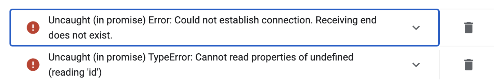
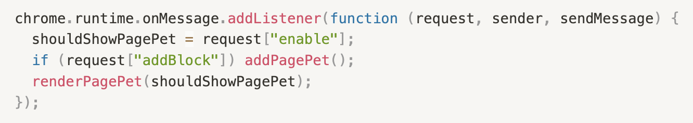

This is the writeup for my final project.
For my final version of my web extension, I added the capability of searching for the gif that the user would want to have bounce around their page. They can then pick from the available gifs, add the gif in, and make the gif bounce around the page for a nice study break. The purpose of the web extension is to bring a smile to the user's face and give them a brief distraction from work, without completely taking them from their flow of work as the web extension takes place on the page they were already on.
A problem that I ran into which took me forever to solve was that all of a sudden, the web extension just did not work anymore. It was working when I closed my laptop after I finished working on it, and the next day it just stopped working. I don't exactly know what happened, but it seemed like the issue was that the content script just wasn't being loaded. This was the error that kept popping up:
I researched content scripts, googled all of my error messages, and checked Stack Overflow. I eventually switched the receiver from using an arrow function to an anonymous function, which seemed to do the trick and it started working again. This is the code that I ended up using (but changed later):
Generally, I don't think that my project scope changed too drastically from my previous plan. A change that I did implement was when I was looking more into the Unsplash API, I stumbled upon Tenor API which was able to provided gifs instead of just static images. I decided to change APIs, which doesn't affect the plan of my project. I was actually able to implement all of the primary features that I wanted to add for this prototype, which mainly consisted of the dropdown menu where the user can choose what category of gif they would like to see.
I think that I could have managed my time better, as I left some of the work to the last minute. There were also parts in this project that I didn't expect to take so long but did, like researching different types of gif APIs and finally picking the Tenor API. I also got frustrated with the issue that I discussed in my deep dive and decided to take a break from the project which also did not help my time management.
I don't think that my implementation plan has changed too much, because I am pretty on track with where I wanted to be at the beginning. I did talk to Hannah, and she did advise me that removing the background of a image and especially a gif would be very difficult, so I will find an alternative other feature to implement for the final project. I will probably just add more features to the popup and make the web extension more personalizable for the user, like adding a search function where they can search what type of gif they would want bouncing around the screen. I would also be interested in letting the user interact with the gif as it bounces around the screen more.